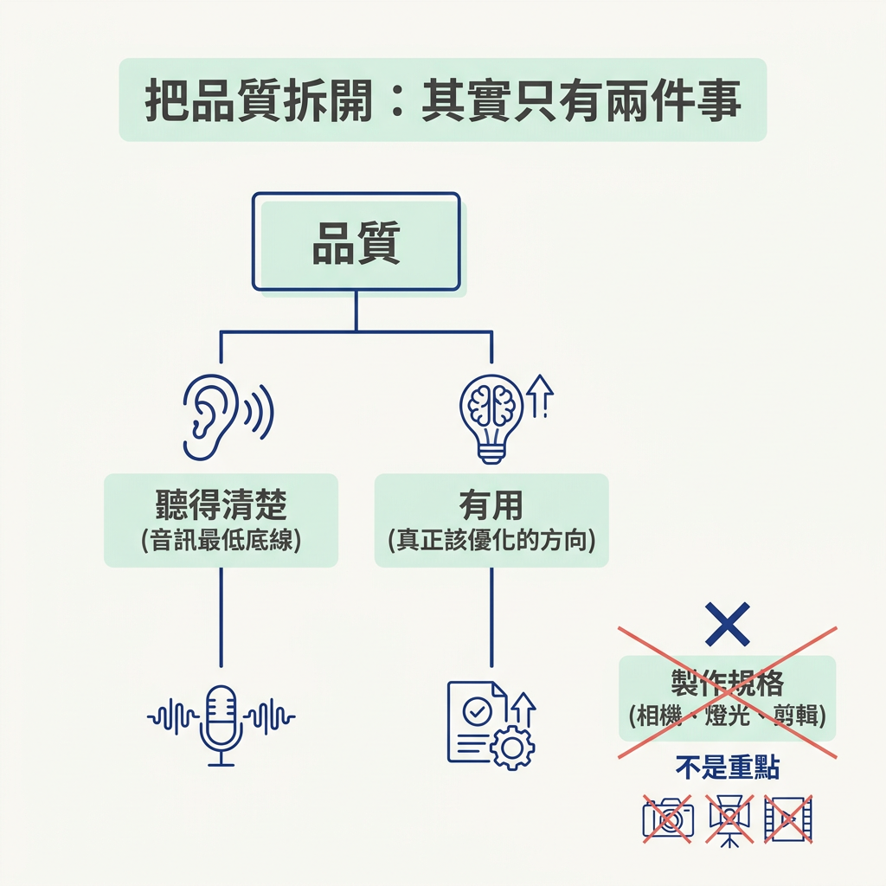
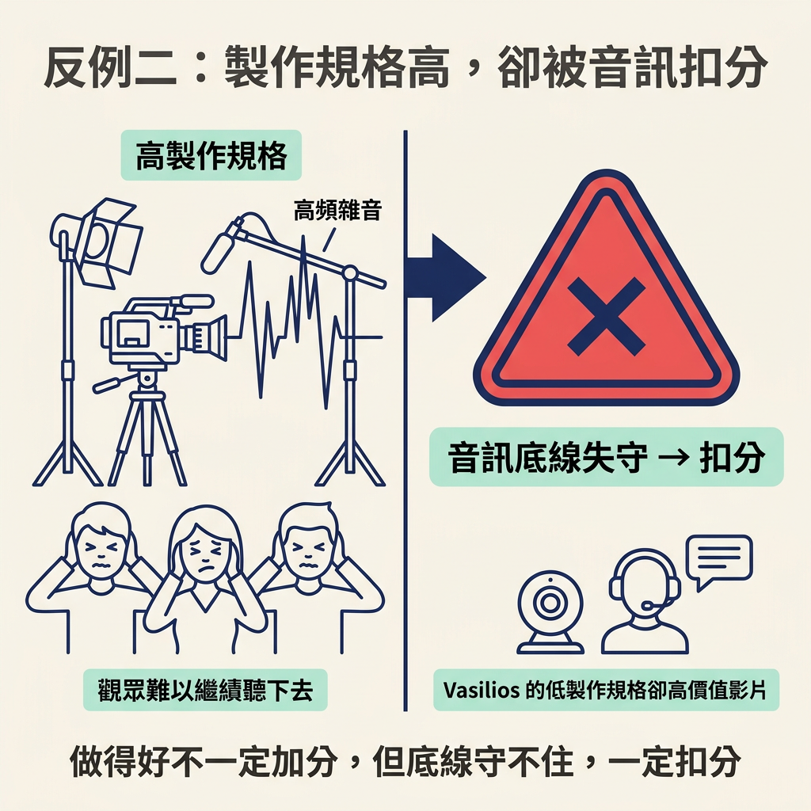

把品質重新看成「有用＋聽得清楚」：音訊是不能低於的底線，製作規格則不是重點。
上一節談的是品質門檻：內容規模變大時，門檻也會跟著提高。但知道「什麼時候要在意」之後，還得進一步弄清楚「到底該在意什麼」。很多人想到品質，腦中先浮現的是好相機、好燈光和好剪輯。
這一節的重點是內容，不是器材。講師的說法很直接：對大多數創作者來說，品質通常不是製作水準（production level），也就是相機、燈光和剪輯看起來有多精緻。你不需要高級相機，也不需要最新、最貴的音訊設備，才能做出高品質內容。真正該在意的是另外兩件事。
講師先舉 Vasilios Syrakis 為例。他是系統工程師，曾任職於 Atlassian，目前大約有 109,000 位訂閱者；這些追蹤者幾乎全是靠一支爆紅影片帶來的。那支影片在四個月前發布，標題是「I Was Laid Off by Atlassian」，大約有 260 萬次觀看。
影片的器材和畫面都很普通，音訊也只是勉強聽得清楚。他坐在房間裡，分享筆電畫面，製作規格可以說相當低。
但影片能累積 260 萬次觀看並帶來許多追蹤者，是因為內容本身就是一堂紮實的課。想了解系統工程，或想知道 Atlassian 內部如何運作的人，都能從影片中得到很多價值。
這個例子的重點是：品質可以來自內容有用，畫面漂不漂亮倒是其次。即使製作水準很低，內容仍然能做得很好。這是講師希望你先記住的第一個結論。
講師把品質拆成兩個重點：聽得清楚，以及有用。

第一，觀眾必須聽得到內容。講師指出，影片畫面拍得不理想，多數時候還能被原諒；但音訊太差，觀眾很容易注意到，接著就把影片關掉。
第二，內容要有用。音訊達到最低標準後，這才是你真正該持續改善的地方。
| 製作規格 | 聽得清楚 | 有用 | |
|---|---|---|---|
| 重要程度 | 不是重點 | 不能低於的底線 | 真正該花力氣的方向 |
| 做不好會怎樣 | 多半可以被原諒 | 觀眾可能注意到，接著關掉影片 | 內容會失去存在的理由 |
| 該投入什麼 | 不用急著提升 | 如果要花錢，先改善音訊 | 把內容講透，持續累積價值 |
高製作規格也不一定能保證觀眾喜歡。講師舉了媒體公司 Every 訪問 Sam Altman 的影片為例。這支影片的燈光和相機都很到位，畫面幾乎挑不出問題。
但翻看留言，就會發現觀眾討論的是貫穿整支影片的高頻雜音。這個聲音讓人很難繼續聽下去。即使製作規格很高，只要音訊出了問題，影片還是會被扣分。這正好點出品質的底線：做得好不一定加分，但底線守不住，一定扣分。

如果真的想買器材，講師給了一個明確的優先順序：先買能改善音訊的設備。不過他也提醒，大多數手機內建的相機和麥克風，通常已經能達到基本門檻。
換句話說，音訊是最低標準，不是需要不斷追求升級的目標。如果現在的手機多半已經能讓觀眾看清楚、聽清楚，就不必把時間和金錢都花在器材上。接下來更值得投入的，是讓內容變得更有用。
品質不是製作規格，而是「有用＋聽得清楚」。畫面不夠精緻，多半還能被原諒；音訊太差，觀眾可能直接關掉影片。因此，音訊是不能低於的底線，而音訊過關後，真正該持續改善的是內容的有用程度。Vasilios 用低製作規格做出有價值的影片；Every 訪問 Sam Altman 的例子則說明，即使製作規格很高，音訊出了問題，影片還是會被扣分。
這一節接續前一節的品質門檻，進一步說明品質真正由什麼構成。帶著這個判斷，下一個實際問題就浮現了：剛開始創作時，到底要不要露臉？下一節會把這個選擇攤開來比較。